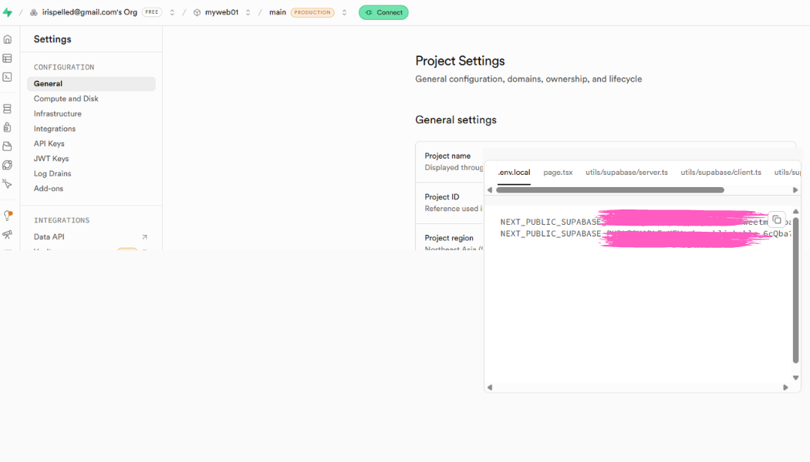
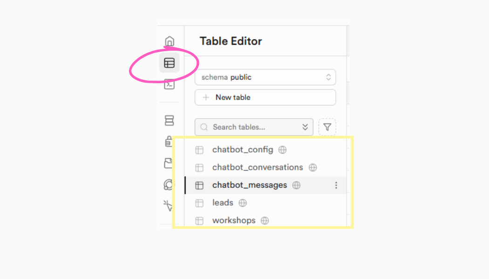
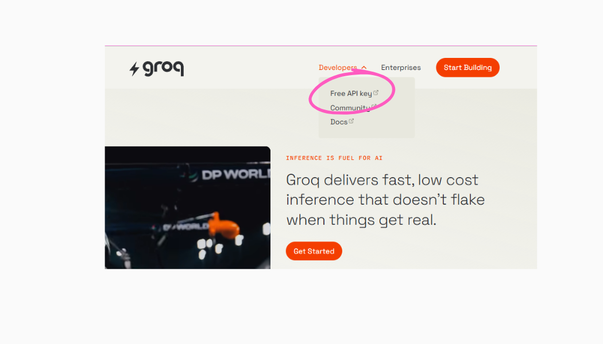
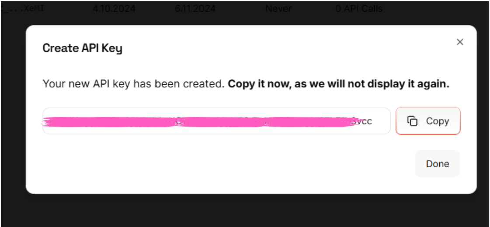
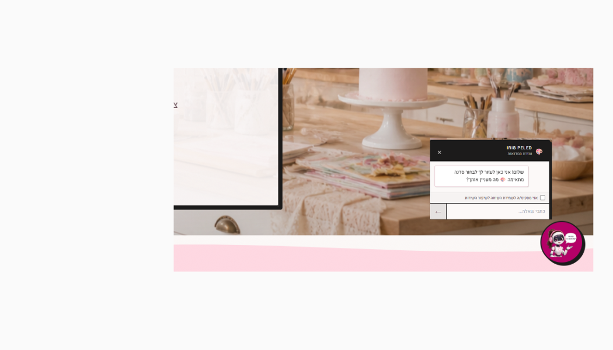
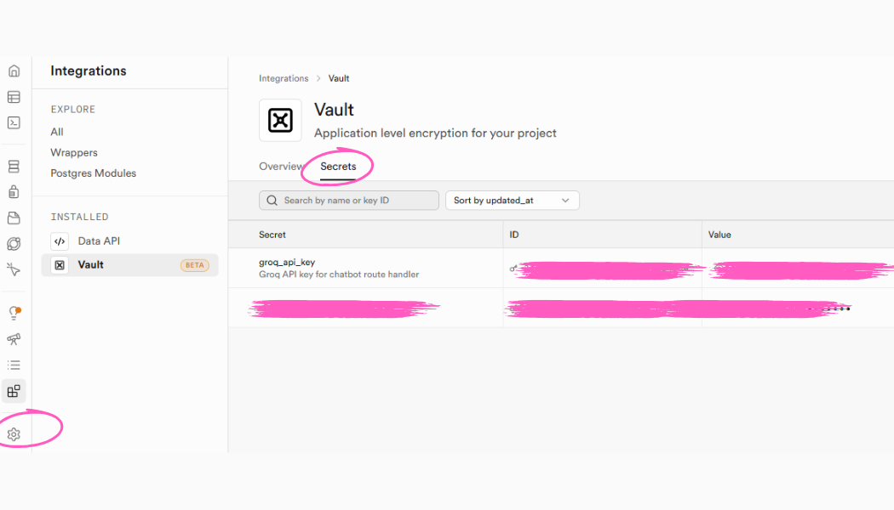

נקודת הפתיחה — מה מכינים מראש
לפני שמתחילים, יש להכין את כל החומרים — קבצי תכנון, עיצוב ותמונות
 מה זה Claude Code?
מה זה Claude Code?
קלוד קוד פועל בטרמינל ומחובר לאפליקציית Claude Desktop. הוא קורא את קבצי הפרויקט, כותב קוד, מריץ פקודות ובונה פיצ׳רים — בהנחייה שלכם. אתם לא כותבים שורת קוד אחת.
את — פותחת חשבונות, מעתיקה מפתחות, מתארת מה לבנות ומאשרת תוצאות.
קלוד קוד — בונה את הכל: Next.js, Supabase, Groq, Vercel.
צרו תיקיה חדשה לפרויקט (באנגלית, ללא רווחים) והכניסו אליה את הקבצים הבאים:
├── plan.md ← התוכנית הראשית
├── phase1.md ← פאזה 1 — Supabase
├── phase2.md ← פאזה 2 — עיצוב
├── phase3.md ← פאזה 3 — Groq
├── phase4.md ← פאזה 4 — אבטחה
├── phase5.md ← פאזה 5 — פרסום
└── design.md ← קובץ העיצוב
קבצי הפאזות מכילים הוראות מפורטות לקלוד — הוא יקרא וידע בדיוק מה לבנות
הכינו קובץ design.md עם כל הגדרות העיצוב של האתר. ניתן ליצור אותו באחת מהדרכים:
- יצרתם ב-Claude Design / Google Stitch / כל מודל שפה
- בקשתם מקלוד קוד: "תכין לי design.md על סמך התמונה הזו"
אספו מראש את הנכסים הויזואליים של האתר:
- לוגו — PNG עם רקע שקוף
- תמונת Hero — תמונה גדולה לחלק העליון
- תמונת פרופיל — תמונה של בעל/ת העסק
- תמונות שירותים — לכל קטגוריה
קלוד יקרא אותן ישירות מתיקיית public/ שייצור
כל הכלים בתהליך זה חינמיים לשימוש בסיסי: Next.js, Supabase, Groq, Vercel, GitHub. אין צורך בכרטיס אשראי לשלבים הבסיסיים.
פתחו את Claude Desktop, עדכנו שעובדים לוקאלית ותנו לקלוד את שם תיקיית הפרויקט
תנו לקלוד את plan.md ואת phase1.md — במצב Plan Mode
בשלב זה קלוד רק קורא ומבין — כותב לעצמו תוכנית עבודה. הוא עדיין לא בונה כלום
קראו את התוכנית שקלוד כתב — ולחצו Accept לאשר לו לצאת לעבוד
פתיחת חשבון Supabase
יוצרים פרויקט Supabase ומעבירים את מפתחות הגישה לפרויקט
גשו ל-supabase.com ולחצו Start your project
הירשמו עם כתובת מייל
לחצו New project, תנו שם והגדירו סיסמה. לחצו Create new project
המתינו כ-2 דקות עד שהפרויקט מוכן — הדף יתרענן אוטומטית
בדשבורד של הפרויקט — לחצו על הכפתור הירוק Connect הנמצא ליד שם הפרויקט
החלונית נפתחת בפינה התחתונה ומכילה את כל פרטי החיבור וכפתור Copy אחד

לחצו Copy בחלונית — כל המפתחות מועתקים בבת אחת
פתחו את קובץ .env.local ב-Notepad / VS Code / Cursor, הדביקו (Ctrl+V) ושמרו (Ctrl+S)
קלוד בונה את התשתית
קלוד מקים את הפרויקט ויוצר את הטבלאות בסופהבייס
מאתחל Next.js + TypeScript + Tailwind ויוצר את מבנה הקבצים:
כותב SQL ויוצר את הטבלאות ישירות ב-Supabase:
- CREATE TABLE + INSERT נתוני בסיס
- שומר את הסכמה בקובץ supabase/schema.sql
- כותב פונקציות גישה לנתונים בצד הקוד
בדקו שהטבלאות נוצרו: פתחו את Supabase, בחרו בתפריט השמאלי את Table Editor
תוכלו לראות את כל הטבלאות שקלוד בנה — שמות, עמודות, נתוני בסיס

עיצוב ובניית האתר
מכינים קובץ עיצוב ותמונות — Claude Code בונה את כל האתר על פיהם
העבירו את כל התמונות שהכנתם מראש לתיקיית public/ בפרויקט — לוגו, תמונות סדנאות, תמונת פרופיל
תנו לתמונות שמות באנגלית ללא רווחים — לדוגמה: logo.png, hero.jpg, about.jpg
פתחו Plan Mode ובקשו:
קראו את התוכנית ואשרו — קלוד מתחיל לבנות
קורא design.md + כל התמונות ב-public/ ובונה את כל קומפוננטי הדף:
מגדיר פונטים, RTL עברית, ואנימציות לפי העיצוב. מחבר טופס השארת פרטים לטבלת leads ב-Supabase
צופים בתצוגה המקדימה שקלוד פותח ב-localhost:3000 ומבקשים תיקונים:
- "שנה את הצבע", "הגדל את הכותרת"
- "הוסף אנימציה", "שנה את הפריסה"
כשמרוצים — ממשיכים לפאזה הבאה
ניתן להפעיל סקילים להוספת אנימציות ושיפורי עיצוב אוטומטיים: /animate /polish /bolder
ספריית קומפוננטות מוכנות ואיכותיות. בחרו קומפוננטה, לחצו Copy Prompt — והדביקו לקלוד את הפרומפט המועתק
צ׳אטבוט AI עם Groq
פתיחת חשבון Groq, קובץ ידע, ו-Claude Code בונה את כל הצ׳אטבוט
זוהי דוגמה בלבד. לשימוש נרחב כדאי להביא מפתחות API ממודלי שפה כמו Gemini דרך Google AI Studio — הדורשים תשלום.
גשו ל-console.groq.com ולחצו Sign Up (חינמי)
לאחר הכניסה: פתחו את תפריט שמאל, בחרו API Keys ולחצו Create API Key
תנו שם ולחצו Submit — העתיקו את המפתח מיד!
המפתח מוצג פעם אחת בלבד. הוא נראה כך: gsk_...


הצ׳אטבוט עונה רק על בסיס קובץ הידע שתכתבו — לא ממציא מידע שאינו שם. זה מונע הבטחות שגויות למבקרים.
צרו קובץ services.md בתיקיית הפרויקט וכתבו את כל המידע שהצ׳אטבוט מורשה לענות עליו:
- שמות שירותים, מחירים, משך, גודל קבוצה, מה כלול
- איך להירשם
- מה הצ׳אטבוט לא עונה: "אל תבטיח מועדים"
פתחו Plan Mode ותנו לקלוד את phase3.md — הוא כבר מכיל את כל ההוראות
קראו את התוכנית ואשרו — קלוד מתחיל לבנות. כשיבקש Groq API Key — הדביקו בקובץ .env.local:
קלוד בונה צ׳אטבוט:
- ChatbotWidget — כפתור עגול + חלון שיחה RTL עברי
- API route שרתי — המפתח לא נחשף לדפדפן
- חיבור ל-Groq + קריאת services.md לפרומפט
- שמירת היסטוריית שיחה ב-React state

הכינו אייקון בפורמט SVG בלבד עם רקע שקוף (Canva או מודל תמונה). שמרו ב-public/chatbotimg.svg וציינו לקלוד: "השתמש ב-chatbotimg.svg בכפתור"
אבטחה ושמירת שיחות
מעבירים את ה-Groq API Key לכספת מוצפנת ב-Supabase ומוסיפים שמירת שיחות
בקשו:
אשרו את התוכנית — קלוד מתחיל לעבוד. אחרי שסיים — בצעו את השלבים הבאים:
פתחו את Supabase, בחרו בתפריט השמאלי Vault
בחרו בלשונית Secrets
לחצו Add new secret
בשדה Name כתבו: groq_api_key
בשדה Secret הדביקו את מפתח ה-Groq מפאזה 3 — נראה כך: gsk_...

לחצו Save — המפתח נשמר מוצפן ב-Vault
פתחו את Supabase, בחרו בתפריט השמאלי Settings ואז API. תחת Project API Keys העתיקו את service_role (secret)
פתחו .env.local, הוסיפו את השורה ושמרו Ctrl+S:
בנה configRepository ששולף Groq key מ-Vault, יצר טבלאות שיחות ב-Supabase, הוסיף checkbox הסכמה לצ׳אטבוט — שמירה רק כשהמשתמש הסכים במפורש
פרסום לאינטרנט
מעלים ל-GitHub ומחברים ל-Vercel — האתר עולה לאוויר ומתעדכן אוטומטית
בקשו מקלוד קוד:
יוצר את ה-repository ב-GitHub, מאתחל git ועושה commit לכל הקבצים (חוץ מ-.env.local), מחבר ומעלה (git push)
- גשו ל-vercel.com
- לחצו Sign In ובחרו GitHub
- לחצו Add New ובחרו Project
- מצאו את ה-repo שקלוד יצר ולחצו Import
לפני Deploy — גללו למטה ל-Environment Variables.
לחלופין — הוסיפו ידנית:
לחצו Deploy — המתינו כ-2 דקות
פתחו את Supabase, בחרו בתפריט השמאלי Authentication ואז URL Configuration
- שדה Site URL: הדביקו את כתובת ה-Vercel שלכם
- שדה Redirect URLs: הדביקו שוב את אותה כתובת
- לחצו Save
צ׳קליסט — הכל מוכן?
סמנו כל פריט כשסיימתם — וודאו שהכל עובד
הקלפים הבאים מסבירים למה כדאי להשתמש ב-Skills — העבירו עכבר להפוך:
חיסכון בזמן
לא צריך לחזור על עצמכם
העבירו את העכבר ←עקביות
תמיד אותו סגנון
העבירו את העכבר ←מקצועיות
ידע של מומחים
העבירו את העכבר ←שימוש חוזר
התקינו פעם אחת
העבירו את העכבר ←UI/UX Pro Max
161 פלטות צבעים, 57 זוגות פונטים, 99 גיידליינים — לכל 10 טכנולוגיות
Frontend Design
ממשקים מרהיבים — נגד עיצוב גנרי. מכריח בחירות עיצוביות מכוונות.
shadcn/ui
ידע מעמיק על ספריית הקומפוננטים — buttons, modals, forms, tables
Web Design Guidelines
בודק קוד מול תקני נגישות ו-UX של Vercel
Remotion Best Practices
38 קבצי חוקים לעבודה עם Remotion — אנימציות, אודיו, כתוביות
כל הסקילים הרשמיים ושל הקהילה נמצאים ב-skills.sh — חפשו, גלו, והתקינו בקליק.